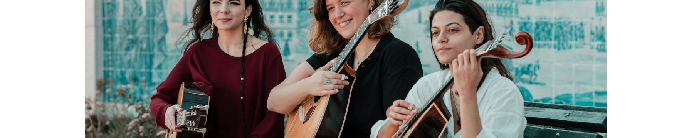
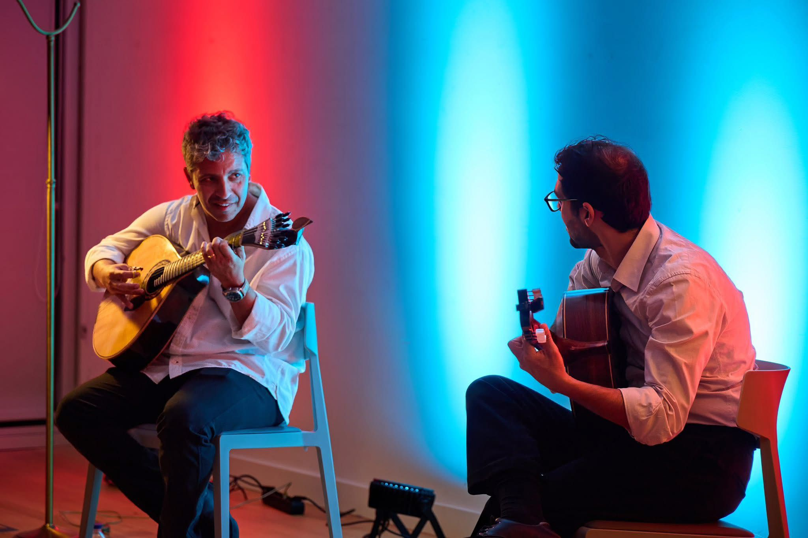

Onofriana
Curadoria · Produção · Programação
Sou a Onofriana.
Nasci de um nome que a História quase deixou cair no silêncio. Maria Severa Onofriana foi a primeira voz que o Fado reconheceu como sua.
Quero ir aonde o Fado seja escutado e apreciado — não como pano de fundo, distração ou curiosidade, mas presença cultural viva, com pulsação e memória.
O Fado não se encena. Acontece.
A Onofriana
A Onofriana dedica-se à curadoria, produção e programação de eventos de Fado em contextos culturais, institucionais e privados. O seu nome é inspirado na mítica e misteriosa figura de Maria Severa Onofriana, a primeira fadista documentada na História do Fado.
Trabalhamos com uma rede alargada de profissionais experientes, fadistas e instrumentistas, para formar diferentes conjuntos adaptados a cada contexto: sessões acústicas e intimistas, palcos, noites de Fado tradicionais e temáticas, espetáculos para escolas, teatros e auditórios, festividades locais, etc.
Marcamos a diferença pela qualidade e pelas nossas ofertas de programação, desde conjuntos de Fado integralmente femininos à criação exclusiva de letras de fados personalizadas para celebrar pessoas ou ocasiões especiais.
A tradição não existe sem um sentido.

Marta Rosa · © Robnu Creative Studio
Formatos de Programação
Clique num formato para saber mais sobre a formação, o repertório e ver exemplos em vídeo.
Fotografia em breve
Severa
Tradicional conjunto de Fado
O formato clássico da tradição lisboeta. Uma fadista acompanhada por guitarra portuguesa e viola de fado — a formação que deu forma ao Fado tal como o conhecemos. Elegante, intemporal, com toda a força da tradição.

Mariquinhas
Conjunto de Fado integralmente Feminino
Um conjunto onde todas as vozes e instrumentos são tocados por mulheres. Uma homenagem à herança feminina do Fado — de Severa até hoje — que propõe uma experiência única, ao mesmo tempo íntima e poderosa.

Guitarradas
Repertório instrumental
O Fado sem palavras — ou melhor, com as palavras que cada ouvinte traz. As guitarradas são o coração instrumental do Fado: virtuosas, expressivas, capazes de preencher qualquer espaço com a sua atmosfera única.

Vimioso
Voz & Quinteto de cordas
O Fado encontra a música de câmara. Uma fusão que expande o universo sonoro do Fado sem o trair — uma fadista apoiada por um quinteto de cordas, para palcos, teatros e auditórios onde a música merece todo o espaço.
Marta Rosa
A curadoria artística da Onofriana é da responsabilidade de Marta Rosa, fadista, violista, letrista e compositora. Licenciada em Ciências Musicais pela Universidade Nova de Lisboa, e em Canto pela Escola Superior de Música do Instituto Politécnico de Lisboa, construiu o seu percurso entre as casas de fado e outros palcos, a criação e a direção artística. É uma das poucas mulheres a tocar viola de Fado profissionalmente.
Foi responsável pela curadoria e programação do restaurante Povo Lisboa, um dos espaços culturais de referência da cidade e casa de múltiplas residências artísticas que marcaram o percurso de algumas vozes do Fado, incluindo o dela própria. Foi membro fundador do grupo de Fado As Mariquinhas, constituído exclusivamente por mulheres, e anuncia agora ao mundo Onofriana — a herança feminina do Fado.
Perguntas Frequentes
Somos uma empresa especializada na curadoria, produção e programação de eventos de Fado. Criamos experiências para públicos diversos, desde eventos privados a programação para espaços culturais e institucionais.
Criamos programação personalizada para o seu evento. Sessões acústicas e intimistas, celebrações especiais, aniversários, casamentos, eventos corporativos, noites de fados, concertos, ciclos temáticos para escolas, palcos, teatros, auditórios, festividades locais, etc.
Sim. O nosso foco é o Fado no âmbito cultural, onde podemos incluir programação articulada com Poesia (cantada e declamada), Teatro (encenações fadistas) e sessões interativas para contextos escolares.
Sim. Dispomos de vários formatos e soluções. Cada apresentação é cuidadosamente adaptada ao seu espaço, ao público e ao contexto.
Trabalhamos com uma rede alargada de profissionais experientes e bem reconhecidos no circuito para garantir a qualidade artística mais elevada.
Sim. Podemos assumir só a parte musical, ou todos os detalhes inerentes à execução do evento: coordenação logística, produção técnica (som, luz), apoio na conceptualização do evento, etc.
Depende do formato. Desde breves apontamentos de 20 a 45 minutos a atuações de 60 a 90 minutos, com intervalo, até formatos adaptados. Programas longos podem incluir pausas ou múltiplos momentos musicais.
Varia consoante o número de artistas, duração do espetáculo, localização, necessidades técnicas, etc. Cada orçamento é personalizado.
Sim. Temos experiência com públicos estrangeiros. Podemos fazer breves introduções em inglês, francês e espanhol, contextualização cultural e histórica do Fado, e formatos mais acessíveis e interativos.
Atuamos em todo o tipo de espaços, mas a nossa força maior consiste em fazer programação cultural independente e isenta. A ampla versatilidade do Fado, mesmo no papel de figurante, está mais que comprovada. É por isso mesmo que ele, para nós, é o verdadeiro protagonista.
Contacte-nos através do formulário no nosso website, e-mail ou telefone.
A tradição não existe sem um sentido. Trabalhar com um património vivo, e em constante transformação, é fazer parte de uma história inacabada, de raízes profundas, e marcada pela forte herança feminina que desbastou caminhos para o mundo — desde a primeira fadista.
Falar connosco
Cada espetáculo começa antes da primeira nota. Começa numa conversa sobre o lugar, o momento e quem vai escutar.
Se quer levar o Fado ao seu evento, escreva-nos. Conte-nos o contexto, o espaço e a ocasião.
Ao submeter confirma que leu a nossa Política de Privacidade. Os seus dados são usados exclusivamente para responder ao seu pedido.